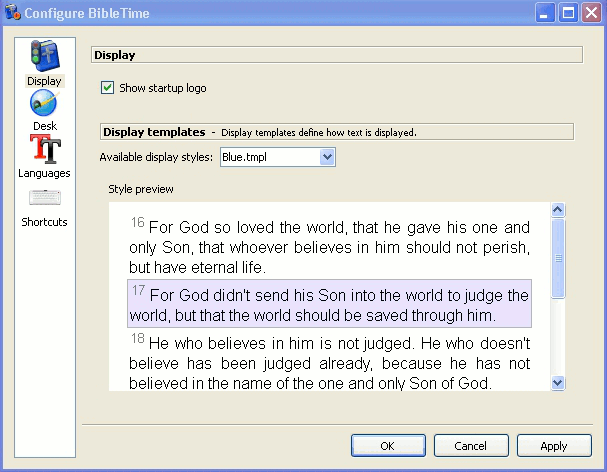

У цьому розділі ви знайдете огляд налаштування BibleTime, який можна знайти у розділі в головному меню.
Користувацький інтерфейс BibleTime може бути налаштований багатьма способами залежно від ваших потреб. Ви можете отримати доступ до діалогового вікна конфігурації, вибравши пункт .
Поведінку при запуску можна налаштувати. Оберіть один із таких варіантів:
Показувати заставку при запуску
Шаблони показу визначають візуалізацію тексту (кольори, розмір тощо.). Доступні різні вбудовані шаблони. Якщо ви виберете один із них, то побачите передпрогляд на правій панелі.
Багато функцій, передбачених SWORD серверна частина тепер можуть бути налаштовані в BibleTime. Ці функції задокументовані прямо у діалоговому вікні. У вас також є можливість вказати стандартні роботи, які слід використовувати, коли у довіднику не вказано ніяких конкретних робіт. Приклад: стандартна Біблія використовується для показу вмісту перехресних посилань у Біблії. Коли ви наведете на них вказівник, журнал покаже вміст згаданих віршів у відповідності зі стандартною Біблією, яку ви вказали. За допомогою текстових фільтрів можна керувати зовнішнім виглядом тексту.
Тут ви можете вказати, яку мову слід використовувати для назв біблійних книг. Встановіть її на свою рідну мову, якщо вона доступна, та ви відчуєте себя як вдома.
Усталено BibleTime використовує типовий шрифт системного дисплея. За необхідности ви можете перевизначити цей шрифт. Деякі мови потребують, щоб спеціальні шрифти показувалися правильно, та це діалогове вікно дозволяє вказати користувацький шрифт для кожної мови.
|  |
Вікно парметрів - Шрифти
BibleTime тепер може використовувати усі підтримувані шрифти. Доти, доки цікаві для вас роботи показуються правильно, тут нічого не потрібно робити. Якщо робота показується лише у вигляді серії знаків питання (??????), чи порожні коробки, то ви знайте, що стандартний шрифт дисплею не містить символів, використовуваних у цьому модулі.
Щоб виправити це, виберіть мову цього модулю з випадного меню. Встановіть прапорець використовувати користувацький шрифт. Тепер оберіть шрифт. Наприклад, шрифт, що підтримує багато мов, називається Code2000. Якщо жоден встановлений шрифт не може показати цікавий вам модуль, спробуйте встановити пакунок локалізації для цієї мови.
Докладні дієвкази зі встановлення шрифтів виходять за рамки данного посібника. Для отримання додаткової інформації ви можете звернутися до Unicode HOWTO.
Шрифти можуть бути встановлені з декількох джерел:
Ваш дистрибутив *nix.
Пакунки локалізації Вашого дистрибутиву.
На цьому комп'ютері встановлено Microsoft Windows®.
Колекція шрифтів, наприклад, доступних в Adobe, чи Bitstream.
Онлайн колекції шрифтів.
Шрифти Unicode підтримують більше символів, ніж інші шрифти, та деякі з цих шрифтів доступні безкоштовно. Жоден із доступних шрифтів не включає у себе усі символи, визначені в стандарті Unicode, тому ви можете використовувати різні шрифти для різних мов.
Таблиця 4.1. Юнікодні шрифти
| Code2000 | Мабуть, найкращий безкоштовний шрифт Unicode, що охоплює широкий спектр символів. |
| SIL юнікодні шрифти | Відмінні шрифти Unicode від Summer Інституту Mовознавства. |
| FreeFont | Нова ініціатива вільних шрифтів Unicode. |
| Crosswire каталог шрифтів | Декілька шрифтів доступні з FTP-сайту Crosswire Bible Society. |
| Bitstream CyberBit | Охоплює майже весь діапазон Unicode, але може уповільнити BibleTime з-за його розміру. |
| Clearlyu | Входить у деякі дистрибутиви. Містить європейські, грецькі, єврейські, тайські. |
| Caslon, Monospace, Cupola, Caliban | Частково охоплюють, див. Інформацію на сайті. |
У мережі є хороші переліки шрифтів Unicode, такі як Christoph Singer ( Багатомовні шрифти Unicode TrueType в Інтернеті) чи Alan Wood ( Діапазони символів Unicode та шрифти Unicode, які їх підтримують).
Ярлики (раніше відомі як Сполучення клавішів) — це спеціальні команди клавішів, які можна використовувати замість пунктів меню та значків. Деякі команди BibleTime мають наперед визначені ярлики (повний перелік див. урозділі Ярлики ). Більшості BibleTime команд можуть бути призначені сполучення клавішів. Це вельми корисно для швидкого доступу до функцій, які вам потрібні найбільше.
 |
У попередньому прикладі F2, Bible Study Керівництво має додатковий ярлик, визначений CTRL+2.